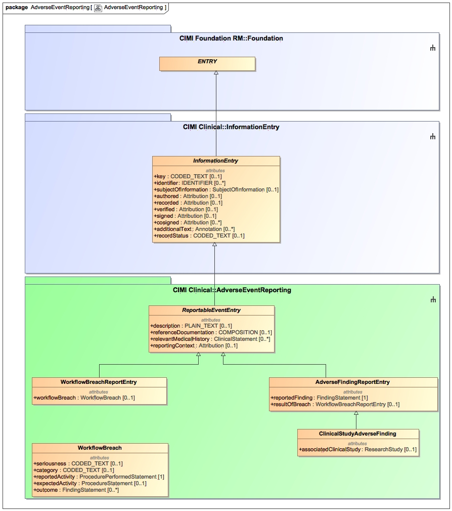

Overview of the Adverse Event Reporting Package and Related Inheritance Hierarchy (EXPERIMENTAL).
Package for classes that pertain to Adverse Event Reporting (green in diagram).
CIMI currently defines two types of adverse event reporting entries:
- The first type focuses on an
activity that represents a undesirable deviation from an accepted workflow and any adverse outcome(s)
that may result from the breach. An example may consist of an administration of a wrong medication and an
associated adverse reaction.
- The second
type of adverse event represents an unusual or untoward finding that is recorded. A special case pertains
to adverse findings documented in the course of a clinical trial, where causality associated with the study
intervention is not assumed.
The WorkflowBreach cluster is a reusable structure that may be shared across reports.
